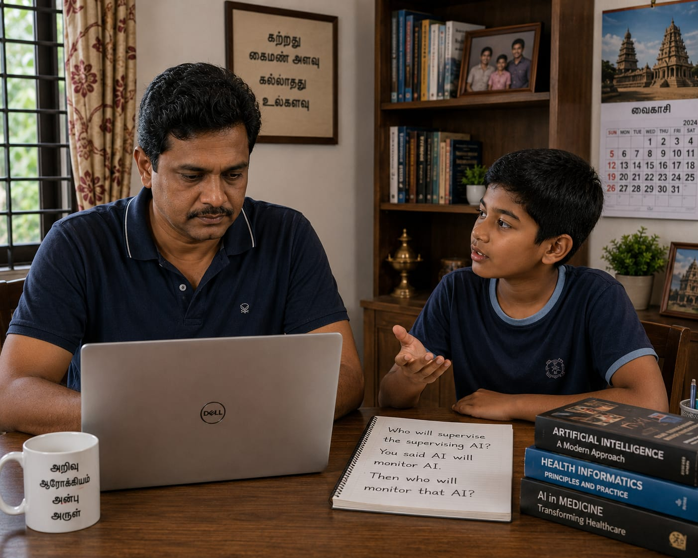

My son came to sit beside me on an evening when I was working. He looked at my screen for a moment — medical literature, AI governance papers, health informatics research. The work of someone watching a field change faster than any generation before it has had to watch medicine change. He said nothing at first. Then his first question arrived quietly.
"Nowadays, people ask AI their health questions directly. If that keeps happening, won't doctors lose their jobs?"
He was asking his father. A doctor. Not a policy maker, not a technologist — his father, who had spent years training to do exactly what AI was now learning to do for free, at any hour, to anyone with a mobile phone.
I smiled. I have heard versions of this question many times — at medical conferences, in policy meetings, from colleagues genuinely uncertain about what is coming. I gave the answer I have given before, and I believed it.
"People may ask AI for information," I told him. "But when a decision truly matters — when a person is frightened, when something is at stake — they still want a doctor. AI gives information. Doctors give accountability, experience, and trust."
He nodded. I thought the conversation was settled.
It was not.

Three Questions, Three Levels of Depth
"But there are millions of people asking AI health questions every minute," he said. "You told me a human should be in the loop — watching, checking. But how? How can humans handle that much load?"
He had found the real problem faster than most governance discussions do.
At the scale AI operates — millions of conversations every hour, across thousands of topics, in dozens of languages — direct human oversight of every single interaction is not possible. There are not enough doctors, not enough hours, not enough human attention in the world for that.
So I explained the architecture that makes it manageable. A medical AI handles the conversation. A supervising AI — a second, separate system — monitors the first, filtering outputs for safety violations, clinical inconsistencies, dangerous advice. Whatever the supervising AI flags is what reaches a human clinician. Whatever it does not flag passes through without any human ever seeing it.
"So," he said, following the logic carefully, "the supervising AI decides what doctors see. And what they never see."
"Yes," I said. "Essentially."
He was quiet for a moment. Then:
"Then who will supervise the supervising AI?"
Because if the supervising AI misses something — if it fails to flag dangerous advice, if it has a blind spot it was never tested for — that advice never reaches a human. No doctor sees it. No one catches it. It goes directly to the person who asked.
That is the real danger. Wrong advice goes out. The supervising AI — the safety net between that advice and any human — misses it. No flag is raised. No doctor sees it. The person who asked receives it and acts on it alone.
I had no answer. Not in the way I had answered his first two questions — with the comfortable confidence of a professional who has thought carefully about these things. This question was simple. A child had asked it. And it was, I realised, one of the most enduring problems in governance that humanity has ever tried to solve.
From Not Enough Information to Too Much
For most of human history, the challenge in healthcare was access. Knowledge lived in specialists, in expensive texts, in clinics that required long journeys to reach. A person in a rural community could not easily verify whether the advice they received was current, complete, or consistent with what someone in a city might hear. The asymmetry was significant and its consequences were real.
Today, the situation has reversed so completely that we sometimes forget how recently it changed.
Within seconds, anyone with a mobile connection can ask a sophisticated AI system about symptoms, medications, interactions, or treatment options. Information that once required years of training is now available at midnight to anyone who can type a question.
This is genuinely remarkable. For communities that have historically been underserved by healthcare infrastructure — including many across South and Southeast Asia — AI-assisted health information has real equalising potential.
But a new challenge has appeared where the old one used to stand.
For most of history, healthcare's information problem was scarcity — too little knowledge reaching too few people. AI has largely solved that problem. The challenge it has created in return is harder to see, because it does not look like a problem. It looks like abundance. The difficulty is no longer finding health information. The difficulty is knowing whether the information you have found is correct.
When AI Watches AI
The architecture I described to my son is not entirely hypothetical. Simplified versions of this layered oversight model are emerging in some AI deployment contexts, and the principle of automated review sitting between AI output and human attention is increasingly discussed in AI safety and governance literature. In a conceptual form: a medical AI handles health queries at scale. A supervising AI sits between that system and the human — acting as a filter, reviewing outputs for safety violations, clinical inconsistencies, dangerous or misleading advice. Only what the supervising AI flags ever reaches a human clinician's attention.
The logic is sound. At the volumes AI now operates, human beings simply cannot be present for every conversation. Automated oversight is not a compromise. It is a practical necessity.
The technical argument is reasonable. The consequences of that argument are what concern me.
If the supervising AI carries a systematic blind spot — the kind that looks correct in testing until it encounters the cases it was never tested on — nothing in the chain catches it. The medical AI produces the advice. The supervising AI passes it through. No human ever sees it. The person who asked receives it and acts on it.
The danger is not the advice that gets flagged. The danger is the advice that does not.
And if we add a third AI to supervise the second — who designed that one? Who validated its judgements? Who tested it against the cases it was most likely to miss? A fourth AI? A fifth?
There is a principle in systems design that describes exactly this: at some point, the chain of supervisors must stop. And whatever it stops at had better be trustworthy, because everything above it depends on it.
The Oldest Governance Question in New Clothing
My son had not intended to ask a philosophical question. He was simply following the logic of what I had described. But the question he landed on has a history stretching back two thousand years.
The Roman poet Juvenal asked it: Quis custodiet ipsos custodes? Who guards the guardians?
Every governance system ever designed has faced the same challenge. Regulators need regulators. Auditors require auditing. Courts can be appealed — but to other courts, which can also be appealed. Governments have oversight committees. Oversight committees have accountability mechanisms. At some point, the chain has to stop. What makes a stopping point legitimate is not that it is beyond challenge. It is that it has earned trust — through transparency, demonstrated performance, and a genuine culture of accountability.
Artificial intelligence has not invented this problem. What it has done is bring it into a context where the systems are fast, the scale is vast, the stakes include human health, and the deployment has often moved well ahead of the governance structures designed to contain it.
"Who guards the guardians?" has been asked by philosophers, politicians, and legal scholars for centuries. What AI has done is give it new urgency — because the guardians now operate at a scale and speed that no human institution was built to oversee. The question is not new. The context has changed everything.
Trust Cannot Be Built by Adding Another Layer
When we encounter a governance problem, the instinct is often to add another mechanism of control. Another committee. Another review layer. Another system to check the previous system.
This instinct is understandable. It is also, when pursued without limit, counterproductive.
Successful governance does not rest on the assumption that every actor can be watched at every moment by someone else. It rests on a combination of things that work together: clear standards that everyone understands, transparent processes that can be examined, accountability structures that assign responsibility when things go wrong, professional cultures that take those responsibilities seriously, and public trust that the system as a whole is functioning in good faith.
Consider aviation — an industry that has developed one of the most rigorous safety cultures in the world. Aircraft are not safe because every engineer is watched by another engineer who is watched by another. They are safe because of design standards, maintenance protocols, crew training, near-miss reporting systems, and a professional culture in which safety is a genuine value rather than a compliance exercise.
Trust in aviation was built, not assumed. It was earned through transparency, accountability, and decades of hard learning from failure. Healthcare AI has not yet earned that kind of trust. Some parts of it are beginning to. But the work ahead is significant.
Adding more layers of oversight does not, by itself, create trust. The goal is not to find a perfect supervisor at the top of the chain. The goal is to build a system that deserves trust at every level — one that can explain its decisions, correct its errors, assign accountability when something goes wrong, and be understood by the people who depend on it.
That is not a technology problem. It is a governance problem. And governance is made of human choices, human accountability, and human institutions willing to take responsibility for outcomes.
Beyond Human-in-the-Loop: Trust-in-the-Loop
A phrase that appears frequently in responsible AI discussions is human-in-the-loop — the idea that meaningful human oversight should be embedded in AI-driven processes, particularly in high-stakes domains. I support this principle. I have written about it from my own practice building clinical AI tools.
But I have begun to think that the phrase, as commonly used, frames the question too narrowly.
The question is not only whether a human is in the loop. The question is whether the loop, as a whole, deserves trust.
Can the system explain its reasoning? Can errors be identified, investigated, and corrected? Can accountability be assigned when something goes wrong — not abstractly, but specifically, to a person or institution that can be held responsible? Can patients and caregivers understand what the system does well and where it has limits?
A system with a human in the loop can still be untrustworthy, if that human lacks the information or authority to act. A system without a human in every loop can still earn trust, if it is transparent, regularly audited, and embedded in a governance structure that takes its responsibilities seriously.
The goal, I have come to believe, is not human-in-the-loop as a technical checkbox. It is trustworthiness as a system property — something that must be built deliberately, demonstrated continuously, and earned rather than claimed.
- 1 Transparency over opacity. AI systems used in healthcare must be able to explain their outputs in terms that professionals and, where appropriate, patients can evaluate and challenge.
- 2 Accountability that can be assigned. When an AI-assisted decision causes harm, responsibility must be traceable to a person or institution — not diffused across an algorithm.
- 3 Error correction built in. Governance structures must include mechanisms for detecting, reporting, and correcting both individual errors and systematic patterns.
- 4 Professional standards, not just technical ones. Clinicians and health informaticians must be trained to understand what AI tools can and cannot do — and to intervene when they should.
- 5 Trust earned, not assumed. No AI system deployed in healthcare should be trusted simply because it is accurate on average. Trust must be demonstrated over time, across populations, and in the cases that matter most.
The Question Worth Keeping
When my son first asked whether doctors would lose their jobs, I felt comfortable answering. I had thought about this carefully. I had a considered view.
When he pointed out that millions of people ask AI health questions every minute, and asked how humans could possibly watch all of it — I had to concede the scale argument. I explained the filter architecture: supervising AI first, human eyes only on what gets flagged.
When he followed that logic to its natural end — if the supervising AI fails to flag something dangerous, it never reaches a human, and that is the real disaster — I paused. Every answer I formed felt, for the first time, genuinely incomplete. The question was exposing something real: not a gap in my technical knowledge, but a gap in how the field as a whole has thought about what it is building.
The future of artificial intelligence in healthcare will be shaped not only by engineers, researchers, and technology companies. It will be shaped by the governance choices that societies make about transparency, accountability, and trust. It will be shaped by whether the people building these systems are willing to ask the uncomfortable questions early — rather than waiting until the consequences of not asking them have become visible.
My son asked his question casually, at the end of an ordinary evening, without any awareness of how long the world has been struggling with a version of it. He asked it because the logic led him there — and because he had not yet learned to stop following a line of thought when it becomes inconvenient.
That, in its way, may be the most valuable thing a person can bring to this conversation.
The greatest challenge of artificial intelligence in healthcare may not be creating intelligence. It may be deciding whom — and what — we trust. Trust is not a feature that can be added at the end. It must be built into the design from the beginning. And it begins with being willing to ask the question a child asked at the end of an ordinary evening, and to sit with it honestly until we have a real answer.